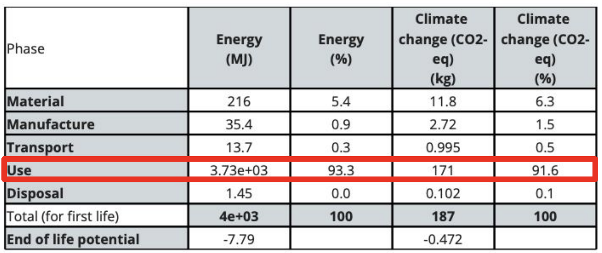
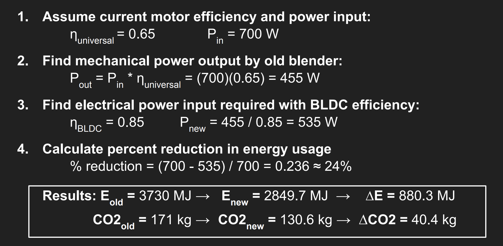
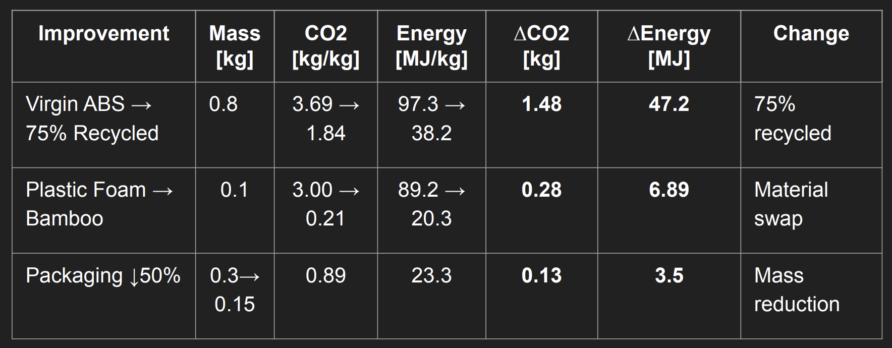
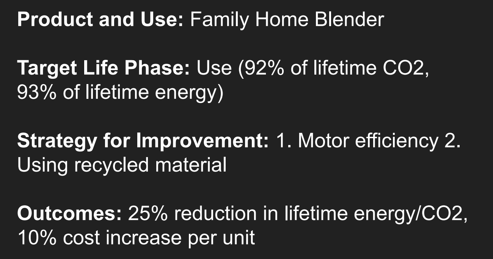

Sustainable Blender Redesign
Eco-audit and redesign of a countertop blender, focused on reducing lifetime energy use, carbon emissions, and material impact while preserving product performance.
Project Overview
This project evaluated the lifecycle impact of an Oster Classic Series 8-Speed Blender and proposed an engineering redesign to reduce energy use and carbon emissions. The functional unit was defined as operating a 700 W blender for 5 minutes per day, 7 days per week, over a 15-year lifetime.
The analysis considered material production, manufacturing, packaging, transportation, product use, and end-of-life behavior. The redesign strategy focused on the highest-impact lifecycle stage rather than changing the product arbitrarily.
Baseline Product
- Oster Classic Series 8-Speed Blender
- 700 W motor
- Glass pitcher, plastic base, stainless steel blades
- 15-year assumed product life
Primary Finding
The use phase dominated the lifecycle impact, contributing approximately 92% of lifetime CO₂ and 93% of lifetime energy use.
Baseline Product and Functional Unit
The blender was treated as a common household product used for family-scale smoothie preparation. Its major components include a borosilicate glass pitcher, stainless steel blades, plastic base housing, copper/steel motor assembly, and silicone seals.

Eco-Audit Findings
The eco-audit showed that material production, manufacturing, transportation, and disposal were small compared with the energy consumed during product operation. This meant the most effective redesign strategy was to reduce electrical losses during blending rather than only reducing material mass.
Baseline Impact
- Energy: approximately 4000 MJ over product life
- CO₂: approximately 187 kg CO₂-eq over product life
- Dominant phase: product use
Design Implication
Because the use phase dominated, the redesign prioritized motor efficiency and blending efficiency before secondary material and packaging improvements.

Redesign Strategy
The primary redesign replaced the existing brushed universal motor with a higher-efficiency brushless DC motor. The proposed motor change reduced the electrical input required to deliver the same mechanical output power. Secondary improvements included recycled ABS housing material, lower-impact packaging inserts, and reduced cardboard packaging mass.
Primary Improvement
Replace the universal motor with a higher-efficiency BLDC motor, increasing estimated motor efficiency from roughly 60–70% to roughly 80–90%.
Secondary Improvements
- Use 75% recycled ABS for the base housing
- Replace plastic foam inserts with bamboo-based packaging
- Reduce cardboard packaging mass by 50%

Energy and Carbon Reduction
The redesign assumed the baseline 700 W input motor operated at 65% efficiency, producing about 455 W of mechanical output power. With an 85% efficient BLDC motor, the same output power would require about 535 W of electrical input, corresponding to an estimated 24% reduction in use-phase energy.
Use-Phase Reduction
- Energy: 3730 MJ → 2849.7 MJ
- Energy saved: 880.3 MJ
- CO₂: 171 kg → 130.6 kg
- CO₂ avoided: 40.4 kg
Total Estimated Reduction
Including secondary material and packaging improvements, the redesign produced an estimated 42.29 kg CO₂ and 937.89 MJ lifetime reduction, or about 25.1% overall improvement.

Material and Packaging Improvements
Secondary redesign changes targeted lower-impact materials and reduced packaging mass. These changes had a smaller effect than the motor redesign, but they improved material circularity and reduced packaging-related embodied energy.

Cost and Tradeoffs
The redesign increased estimated unit cost by approximately $7.58, or 10.8% relative to a $69.99 retail product. Most of the added cost came from the BLDC motor replacement, while packaging changes slightly reduced material cost.
The main engineering tradeoff was balancing consumer affordability with lifetime energy savings. Because the use phase dominated the eco-audit, the added motor cost was the most meaningful sustainability intervention despite increasing the product’s upfront cost.
My Role
I focused on the redesign strategy and impact calculations, including the motor-efficiency improvement, secondary material substitutions, estimated energy and CO₂ reductions, and cost tradeoff analysis.
- Identified use-phase energy consumption as the primary redesign target.
- Evaluated BLDC motor replacement as the main performance-preserving efficiency improvement.
- Estimated lifetime energy and CO₂ reductions from motor efficiency changes.
- Compared secondary improvements using recycled ABS and lower-impact packaging materials.
- Assessed cost increase relative to expected sustainability benefit.
Outcome
The final redesign reduced estimated lifetime energy use and CO₂ emissions by approximately 25% while increasing unit cost by approximately 10.8%. The project demonstrated how eco-audit results can guide engineering redesign decisions by identifying the lifecycle stage where changes produce the greatest impact.
